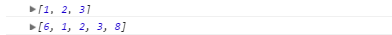

I've tried the following with no success:
function a(args){
b(arguments);
}
function b(args){
// arguments are lost?
}
a(1,2,3);
In function a, I can use the arguments keyword to access an array of
arguments, in function b these are lost. Is there a way of passing arguments
to another javascript function like I try to do?
Answer
Use .apply() to have the same access to arguments in function b, like
this:
function a(){
b.apply(null, arguments);
}
function b(){
console.log(arguments); //arguments[0] = 1, etc
}
a(1,2,3);
You can test it out here.
Suggest
Spread operator
The spread operator allows an expression to be expanded in places where
multiple arguments (for function calls) or multiple elements (for array
literals) are expected.
ECMAScript ES6 added a new operator that lets you do this in a more practical
way: ...Spread Operator.
Example without using the apply method:
function a(...args){
b(...args);
b(6, ...args, 8) // You can even add more elements
}
function b(){
console.log(arguments)
}
a(1, 2, 3)
Note This snippet returns a syntax error if your browser still uses ES5.
Editor's note: Since the snippet uses console.log(), you must open your
browser's JS console to see the result - there will be no in-page result.
It will display this result:

In short, the spread operator can be used for different purposes if you're
using arrays, so it can also be used for function arguments, you can see a
similar example explained in the official docs: Rest parameters